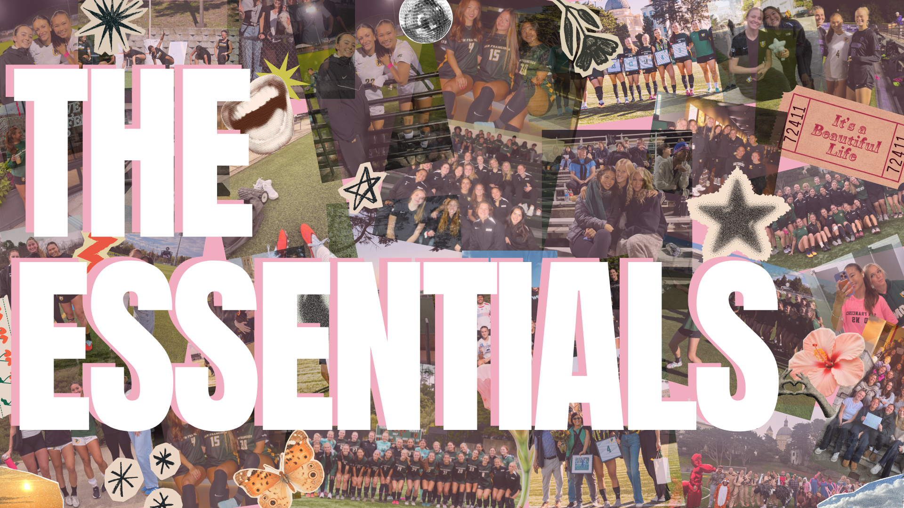
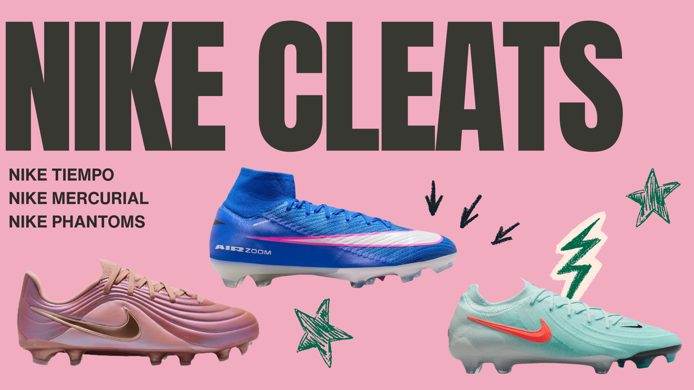
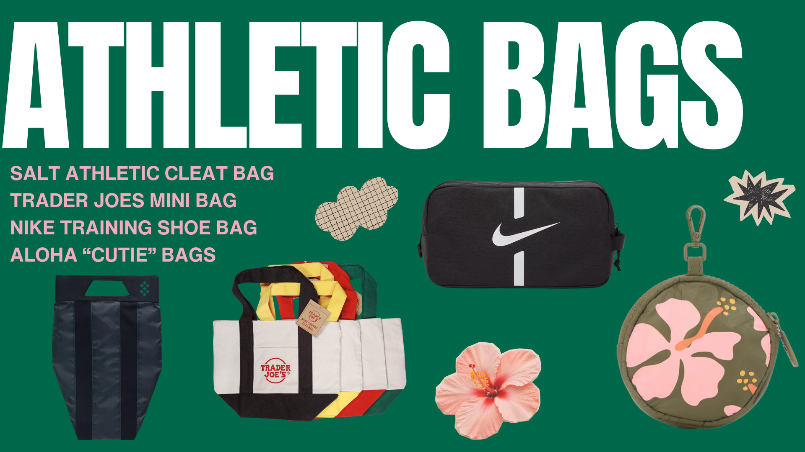
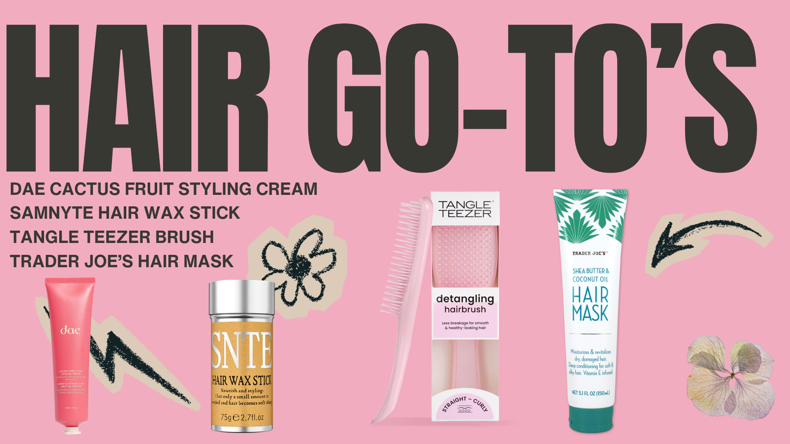
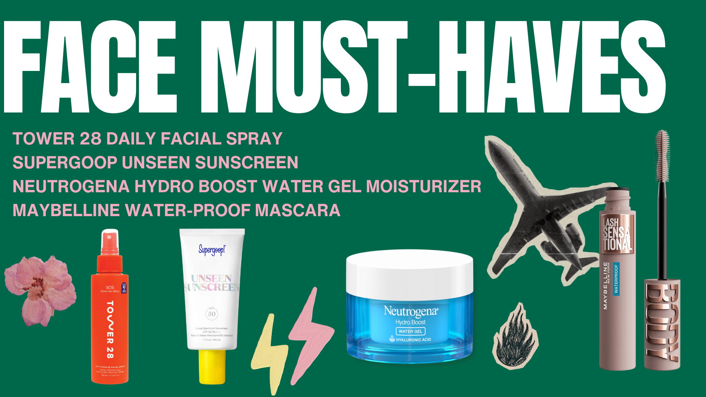

Our team is a Nike school, so we are grateful to wear these types of cleats! The main styles for Nike soccer cleats are Tiempo's, Mercurial's, and Phantom's. They all fit a bit differently depending on your foot shape, playing style, and style preferences! Below are some reasons why the girls love their cleats!

Recently, cleat bags have been really common for girls in college soccer! A lot of my friends at other schools and conferences have the Salt Athletic Cleat Bag. It's a great purchase that keeps your cleats protected and clean.

Having good hair always contributes to a good game. Most of our teams do each other's hair and love sharing different products. One of my favorites is Dae Cactus Slick Back Gel!

San Francisco has crazy weather. With a mix of sun, rain, and fog, many of us wear sunscreen daily during training and games. Listed are some other things such as facial spray, mascara, and lotion.